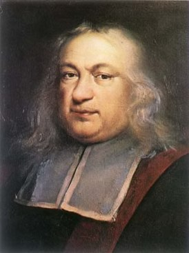

Пьер де Ферма́
(фр. Pierre de Fermat, 1607—12 января 1665)
Многие задачи иногда допускают решение следующего вида. Рассматривается какой-либо процесс (заданный в условии задачи или специально придуманный решающим) и выделяется величина, принимающая натуральные значения и уменьшающаяся с каждым шагом этого процесса. Такая величина называется полуинвариантом и в силу того, что натуральное число нельзя уменьшать бесконечно, мы приходим за некоторое число шагов к правильному случаю, который обычно легко рассматривается и даёт ответ либо доставляет противоречие. Этот способ решения называют методом спуска. О известен с древности, однако часто его приписывают известному французскому математику XVII века Пьеру Ферма. Считается, что именно таким способом он рассчитывал доказать свою знаменитую теорему (Великая или Последняя теорема Ферма).
Существует несколько методов спуска:
Пьер де Ферма́
(фр. Pierre de Fermat, 1607—12 января 1665)